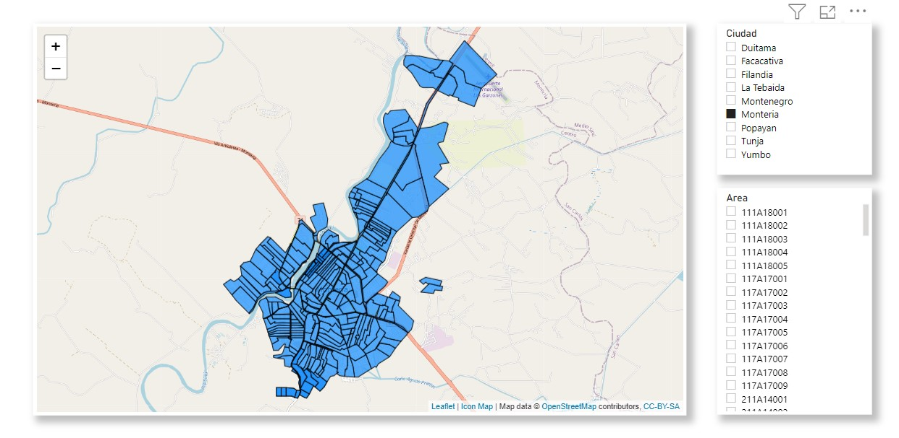

Analista de datos
Alcaldía Municipal de Honda(Enero 2021 - Mayo 2021)
Cargo en formulación e implementación de una encuesta por medio de la herramienta "Google Forms", dirigida a los jóvenes del municipio con el objetivo de dar soporte a la Política Pública de Juventud.
Posteriormente se realizó un proceso ETL a los resultados obtenidos, con el fin de realizar visualizaciones en el software "Power BI", mediante el cual se realizó un análisis profundo de la encuesta y se formuló la política pública.
Asistente técnico
Manizales Cómo Vamos (Julio 2021 - Diciembre 2021)
Responsable de contribuir a la recolección, transformación y visualización de datos de diferentes sectores (financiero, educativo, entre otros) del municipio de Manizales, con el objetivo de dar soporte al informe de calidad de vida de 2022.
Adicionalmente se desarrollo un Dashboard por medio de la herramienta "DataStudio", con el objetivo de presentar la información más relevante y actualizada referente a la calidad de vida del municipio.

Desarrollador BI
Centro de Bioinformática y bigología computacional (Febrero 2022 - April 2022)
Responsable de la construcción y estructuración de informes en el software "Power BI" enfocados en la evaluación de KPIs, además de la reestructuración de fuentes de conexiones a un DataWarehouse alojado en Azure.
Paralelamente se realizó un proceso de modelado de datos geográficos mediante el lenguaje de programación Python, con el objetivo de visualizar las rutas y áreas de trabajo de una tercera empresa en sus tres principales actividades económicas.
